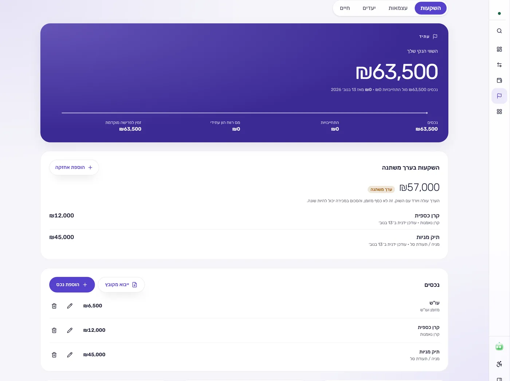
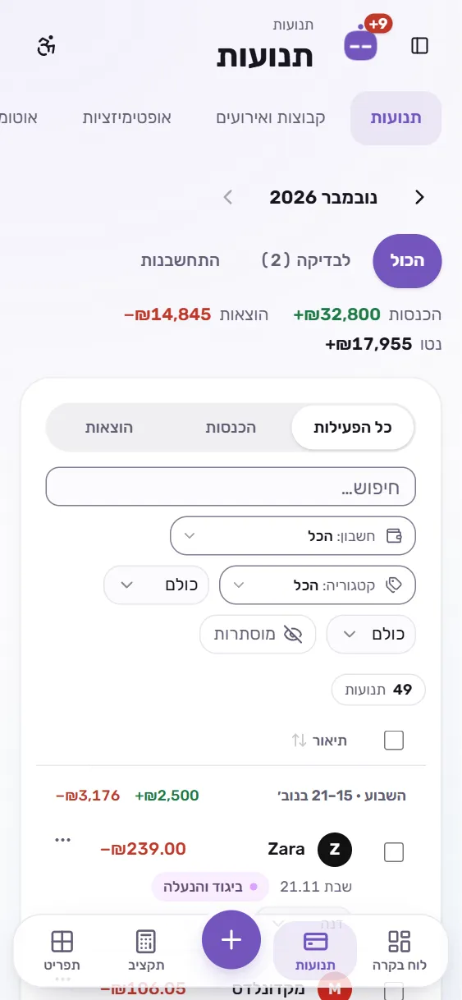
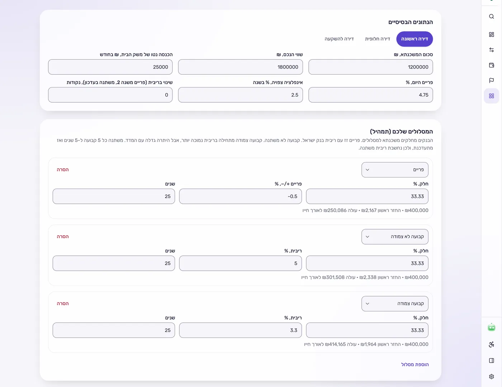
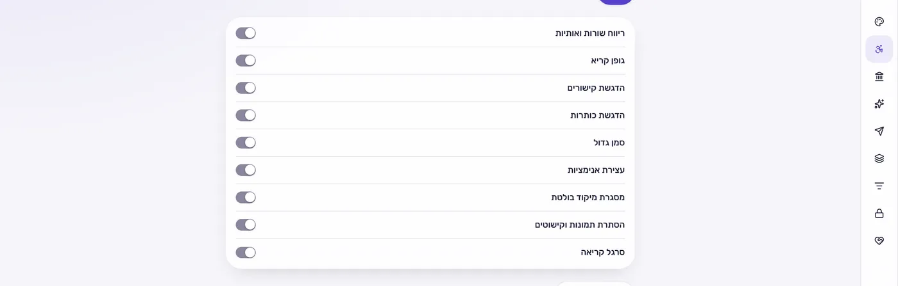

כל הכסף של הבית.
במחשב שלכם.
Penny מחברת את חשבונות הבנק, כרטיסי האשראי, הפנסיה וההשקעות לתמונה אחת. היא מראה לאן הולך הכסף, כמה יישאר בסוף החודש, מה צפוי בחודשים הקרובים, ואיפה אתם משאירים כסף על השולחן. בלי מנוי ובלי ענן: הכול רץ על המחשב שלכם.
- 18 בנקים וחברות אשראי
- 5 גופי פנסיה
- 25+ מחשבונים לכסף בישראל
- 1,200+ בדיקות אוטומטיות
Mac עם מעבד Intel · Docker לשרת או לנאס · כל הגרסאות · הקוד בגיטהאב
- כוכבים בגיטהאב
- הורדות
- גרסה

היום הכסף של הבית מפוזר בחמישה מקומות.
אפליקציית הבנק רואה רק את הבנק. אפליקציית האשראי רואה רק את הכרטיס. האקסל הפסיק להתעדכן לפני חצי שנה, ודוח הפנסיה מגיע פעם בשנה ונשאר במגירה. אף אחד מהם לא עונה על השאלה הפשוטה: כמה יישאר לנו בסוף החודש, ומה עושים עם זה.
במקום אפליקציה לכל בנק
כל החשבונות והכרטיסים ברשימה אחת, מסונכרנת כל יום או מיובאת מקובץ.
במקום האקסל
סיווג לבד לפי מה שלימדתם ומילון של בתי עסק ישראליים, תקציב שנבנה מהממוצע שלכם בלחיצה, וסיכומים לכל תקופה.
במקום דוח פנסיה במגירה
יתרות מחמישה גופי פנסיה, דמי הניהול שלכם מול השוק, ושווי נקי של כל הבית לאורך זמן.
במקום מנוי חודשי
חינם, בלי פרסומות ובלי גרסת פרימיום. הקוד פתוח ברישיון MIT.
מה עושים עם Penny ביום-יום.
ארבע שאלות שכל בית שואל, ומה Penny עונה עליהן.
לאן הלך הכסף?
כל התנועות מכל הבנקים והכרטיסים, מסווגות. למה ההוצאות השתנו החודש לעומת החודש שעבר, לפי בית עסק: מחיר, כמות, משהו חדש או חד-פעמי.
כמה יישאר בסוף החודש?
תקציב לכל קטגוריה שמראה את הקצב ולא רק את הסכום, תחזית יתרה לכל חשבון, ולוח שנה של החיובים הקבועים שעוד בדרך.
איפה אנחנו מפסידים כסף?
סכום שנתי אחד לכל מה שאפשר לחסוך: דמי ניהול גבוהים בפנסיה, ביטוח כפול, עמלות בנק, ריבית על מינוס, מנויים שנשכחו, והחזר מס שאולי מגיע לכם.
איך מגיעים ליעד?
יעדי חיסכון עם בדיקה אם כולם מסתדרים, מחשבון עצמאות כלכלית, משכנתא עם מגבלות בנק ישראל, ושווי נקי לאורך זמן.
Penny מול מה שיש בישראל.
בדקנו מה כל מוצר אומר על עצמו באתר שלו או בחנות האפליקציות. איפה שלא מצאנו מידע כתבנו "לא צוין", וזה לא אומר שהיכולת לא קיימת. איפה שאחרים טובים מאיתנו כתבנו את זה. "אפליקציית הבנק" נבדקה בהפועלים, לאומי ופפר.
| יכולת | Penny | RiseUp | Shavve | Moneytor | FamilyBiz | Cover | MyFinanda | אפליקציית הבנק | Excel |
|---|---|---|---|---|---|---|---|---|---|
| מחיר לחודש | 0 ₪ | 55 ₪, אחרי חודש חינם | 19 ₪ (Pro), אחרי 30 יום חינם | 49 ₪ (פרימיום). בסיסי ידני: 0 ₪ | לא פורסם. בסיסי: 0 ₪ | 0 ₪ | אין מנוי חודשי. 49.90 ₪ ל-3 חודשים | כלול בחשבון | 0 ₪ או חלק מ-Office |
| מחיר לשנה | 0 ₪ | לא פורסם מנוי שנתי. 12 חודשים: 660 ₪ | 199 ₪ (Pro) | 490 ₪ (פרימיום) | 349.90 ₪ (פרימיום) | 0 ₪ | לא פורסם מנוי שנתי. 2 × 89.90 ₪ לחצי שנה: 179.80 ₪ | כלול בחשבון | 0 ₪ או חלק מ-Office |
| כל הבנקים והכרטיסים במקום אחד | כן 18 גופים, בבטא | כן | כן | כן בפרימיום | כן | לא מוזכר באתר | כן 15 גופים | לא רק הבנק שלו | ידני |
| איך מתחברים לבנק | סיסמת הבנק, מוצפנת במחשב שלכם. או קובץ | בנקאות פתוחה מורשית, בלי סיסמה | בנקאות פתוחה מורשית, בלי סיסמה | בנקאות פתוחה מורשית, בלי סיסמה | בנקאות פתוחה מורשית, בלי סיסמה | מסלקה פנסיונית ומשרד האוצר | בנקאות פתוחה מורשית, קריאה בלבד | מובנה | הקלדה או העתקה |
| איפה הנתונים שלכם | במחשב שלכם | אצל החברה | אצל החברה | אצל החברה | אצל החברה | אצל החברה | אצל החברה | אצל הבנק | בקובץ שלכם |
| מפוקח כנותן שירות מידע פיננסי | לא תוכנה שרצה אצלכם, לא שירות | כן | כן | כן | כן | לא צוין | כן | מפוקח בבנק ישראל | — |
| תקציב ותזרים | כן תקציב, מעטפות, תחזית יתרה | כן תזרים חודשי | כן תקציבים | כן תזרים חודשי | כן יעדי הוצאה והכנסה | לא צוין | כן יעדי תקציב | בחלק מהבנקים | ידני |
| פנסיה וביטוחים | כן פנסיה מ-5 גופים, רשימת ביטוחים | לא צוין | כן בחבילות בתשלום | פנסיה כן, ביטוח לא צוין | כן | כן | חיסכון והשקעות. פנסיה לא צוין | רק בבנק | ידני |
| איפה אפשר לחסוך | כן דמי ניהול, ביטוח כפול, עמלות, החזר מס | לא צוין | כן השוואת דמי ניהול ושירותים בתשלום | כן דמי ניהול בפנסיה | כן השוואת מוצרים והוזלת ביטוחים | כן המלצות לפנסיה וביטוח | לא צוין | לא צוין | לא |
| בני זוג ומשפחה | כן פרופילים לכל אחד | כן בן או בת זוג בחינם | כן משק בית משותף | כן מנוי משפחתי | כן | לא צוין | לא צוין | חשבון משותף | קובץ משותף |
| ליווי של אדם | לא | כן מומחי תזרים, בוואטסאפ | הפניה למומחים בתשלום | לא צוין | ביטוח ופנסיה דרך סוכנות מורשית | סוכן AI, גם בוואטסאפ | לא צוין | בנקאי | לא |
| AI | כן לבחירתכם, גם מקומי | לא צוין | כן חיבור ה-AI שלכם | כן API ו-MCP בפרימיום | לא צוין | כן סוכן AI | לא צוין | "ניתוח חכם" בהפועלים | לא |
| אפליקציה לטלפון | לא אתר ברשת הביתית וקיצורים | כן iOS, אנדרואיד ודפדפן | כן iOS, Android | כן iOS ודפדפן | כן iOS, Android | כן אפליקציה ווואטסאפ | כן iOS | כן | כן |
| עובד גם כשהמחשב כבוי | לא | כן | כן | כן | כן | כן | כן | כן | כן |
| קוד פתוח | כן | לא | לא | לא | לא | לא | לא | לא | לא |
נבדק ב-22 בנובמבר 2026. מחירים ויכולות משתנים, אז כדאי לבדוק שוב באתרים עצמם. מקורות: RiseUp, RiseUp FAQ, Shavve, Moneytor, FamilyBiz, Cover, MyFinanda, Hapoalim, Leumi, Pepper. מצאתם טעות? ספרו לנו ונתקן.
מתי לבחור ב-Penny
אתם רוצים את כל התמונה, כולל פנסיה, ביטוחים, מס ותחזית, בלי מנוי ובלי שהנתונים יישבו אצל חברה. יש לכם מחשב בבית, ואתם מוכנים להתקנה של כמה דקות.
מתי לבחור במשהו אחר
אתם רוצים חיבור לבנק דרך בנקאות פתוחה מורשית, בלי למסור סיסמה, ואפליקציה בחנות שעובדת גם כשהמחשב כבוי. RiseUp, Shavve, Moneytor, FamilyBiz ו-MyFinanda עושות את זה. מי שרוצה ליווי אנושי ימצא אותו ב-RiseUp, ומי שרוצה רק לראות פנסיה וביטוחים בחינם ימצא את זה ב-Cover.
מסך אחרי מסך.
בחרו נושא כדי לראות את המסך, או פתחו אותו בדמו החי ועברו על הכול בעצמכם.
כל הבית במבט אחד
לוח בקרה עם אריחים שאפשר להסתיר ולהחזיר: יתרה צפויה, כסף על השולחן, תזרים, מבנה ההוצאות ומי הוציא מה. ומסך פוקוס רגוע למי שרוצה רק את השורה התחתונה.
- צפוי להישאר, וכמה יצא עד עכשיו מתוך התקציב
- מעבר בין חודשי השנה בלחיצה
- הוספת תנועה במזומן בשנייה
- פיפ מראה אם משהו דורש טיפול, והצעד הבא מוצג מתחת

כל התנועות, מכל הבנקים והכרטיסים סנכרון אוטומטי בבטא
סנכרון אוטומטי מ-18 בנקים וחברות אשראי, או ייבוא מקובץ. הכול ברשימה אחת, מסודרת לפי שבועות ובצבעי הקטגוריות.
- חיפוש, סינון לפי קטגוריה, פיצול ותגיות
- תור "לבדיקה" לתנועות חדשות, והתחשבנויות בנפרד
- AI לבחירתכם מסווג תנועות, או בלי AI בכלל
- כללים אוטומטיים לבתי עסק שחוזרים

תקציב שמראה את הקצב, לא רק את הסכום
לכל קטגוריה יש תקציב, כמה כבר יצא וכמה נשאר. אפשר לבנות תקציב מהממוצע שלכם בלחיצה אחת.
- לאן הכסף הולך, לפי קטגוריות
- תצוגת 50/30/20
- סיכום לפי חודש, רבעון, חצי שנה ושנה, כולל שיעור חיסכון
- לוח שנה של חיובים צפויים וחיובים קבועים


השקעות, עצמאות כלכלית ושלבי החיים
השווי הנקי של הבית במקום אחד, ולצידו תכנון קדימה: מתי הכסף יוכל לפרנס אתכם, ומה כדאי לסדר בשלב שבו אתם נמצאים.
- נכסים, התחייבויות ושווי נקי
- הקצאה לפי סוג ומטבע, והשוואה ל-S&P 500 ולת"א 125
- מחשבון עצמאות כלכלית עם אירועים בחיים ויעדים
- רשימות לפי שלב חיים, עם קישורים למקורות רשמיים




נוח ביד אחת, כמו אפליקציה.
Penny מתאימה את עצמה לטלפון, לטאבלט ולמחשב. בטלפון יש סרגל תחתון, כפתור הוספה צף ומסכים שנגללים באגודל. הגישה מהטלפון עוברת ברשת הביתית, רק אחרי שהפעלתם אותה ועם קוד.
- חמש לשוניות למטה: לוח בקרה, תנועות, תקציב, חשבונות ותפריט
- ערכה כהה וערכה בהירה
- אפשר להתקין כאפליקציה במסך הבית של הטלפון



משק בית אחד, וכל אחד עם המסך שלו
Penny בנויה לבית שלם, לא למשתמש בודד. הנתונים משותפים, וההעדפות אישיות.

זה פיפ
נסו אותו: גררו, לחצו, או בחרו מצב רוח.
באפליקציה מצב הרוח נקבע לפי הכסף של הבית, לא לפי כפתורים.פרופילים למשפחה
מסך "מי משתמש?", משק בית אחד משותף, וכל אחד עם הסידור והנגישות שלו.
לשאול את הכסף
"כמה הוצאתי על אוכל בחודש שעבר?" בשפה רגילה, וגם בוט טלגרם עם משוב מיידי.
נגישות מלאה
תפריט נגישות (Alt+A) והצהרת נגישות לפי ת"י 5568 ו-WCAG 2.2 AA.
מצב פרטיות
לחיצה אחת מסתירה את כל הסכומים, למשל כשמישהו מציץ במסך.
התשובות שבאמת חשובות כאן.
יותר מ-25 מחשבונים וכלים מודרכים, מרכז ידע, ובדיקות תקופתיות. כל כלי מציין לאיזו שנה הנתונים שלו נכונים, והקוד מפנה למקור.

מחשבונים


משכנתא

מרכז ידע

בדיקת רווחה

סיכום חודשי


נגישות
כל מה שיש בפנים.
זו הרשימה המלאה, לפי מה שכל חלק נותן לכם. כל סעיף כאן קיים באפליקציה היום, ואפשר לראות אותו בדמו החי.
מה עוד לא טוב מספיק.
כדי שתחליטו על בסיס עובדות.
איך יודעים שזה מוצר רציני.
מה שמבדיל מוצר מניסוי הוא מה שבודקים לפני כל גרסה, ואת זה אפשר לראות בעצמכם.
הקוד פתוח
כל שורה בגיטהאב, ברישיון MIT, וכל אחד יכול לקרוא, לבדוק ולהציע שינוי.
נבדק לפני כל גרסה
יותר מ-1,200 בדיקות אוטומטיות, בדיקות דפדפן על מחשב ועל טלפון, ובדיקות מוטציה על קוד האבטחה. בנק מדומה מריץ שבוע שלם של סנכרונים מקצה לקצה.
אבטחה שאפשר לבדוק
הצפנת AES-256-GCM לסיסמאות, נעילה עם סיסמה או מפתח גישה, עדכונים חתומים, ומסמך אבטחה פתוח שמפרט גם מה עוד לא סגור.
נבנה בפומבי
כל שינוי מתועד ביומן הגרסאות, כל באג שנמצא כתוב בו, ואפשר לפתוח בקשה או דיווח בגיטהאב.
לעבור ל-Penny לוקח ערב אחד.
- מתקינים. קובץ התקנה ל-Windows או Mac, או פקודה אחת ל-Docker.
- מכניסים את הנתונים. מחברים בנק וכרטיס, או מייבאים קובץ Excel או CSV מהבנק או מהאפליקציה הקודמת. ההיסטוריה נכנסת יחד.
- מלמדים פעם אחת. מסווגים כמה בתי עסק, ו-Penny זוכרת. תקציב נבנה מהממוצע שלכם בלחיצה.
- מבטלים את המנוי. מה שנשאר זה סיכום חודשי, תזכורות לפני חיובים, ומקום אחד לכל הכסף.
הנתונים שלכם לא עוזבים את הבית.
האפליקציה רצה על המחשב שלכם ומאזינה רק לכתובת המקומית. הנתונים יושבים בקובץ אחד שאפשר לגבות, עם גיבוי אוטומטי לפני כל שינוי במבנה. שום דבר לא נשלח החוצה, חוץ מהבנק עצמו וספק AI אם בחרתם כזה.

רץ אצלכם במחשב
שירות קטן ברקע. גישה מהטלפון רק בהפעלה מפורשת ועם קוד.
LOCALHOST ONLYהסיסמאות נשארות אצלכם
פרטי ההתחברות לבנק מוצפנים בקובץ מקומי, והאפליקציה ננעלת.
AES-256-GCMאתם בוחרים את ה-AI
Claude, Ollama מקומי, או בלי AI בכלל.
CLAUDE · OLLAMA · OFFמה שכולם שואלים לפני שמתקינים.
זה בטוח לתת לאפליקציה את הסיסמה לבנק?
הסיסמה נשמרת רק על המחשב שלכם, מוצפנת ב-AES-256-GCM, ונשלחת רק לאתר של הבנק עצמו בזמן הסנכרון. אין שרת של Penny שהיא עוברת דרכו. אפשר גם להפעיל נעילה עם סיסמה, ואז מפתח ההצפנה עצמו לא נשמר על הדיסק בלי הסיסמה שלכם. הקוד פתוח, כך שכל אחד יכול לבדוק מה הוא עושה.
לאן הנתונים שלי הולכים?
לשום מקום. האפליקציה רצה על המחשב שלכם, מאזינה רק לכתובת המקומית 127.0.0.1, וחוסמת בקשות מאתרים אחרים. נתונים יוצאים רק אם בחרתם בזה: לספק AI בענן אם בחרתם בו (או בכלל לא, עם Ollama או בלי AI), ולטלגרם אם חיברתם בוט.
מה קורה אם המחשב מתקלקל?
אפשר להגדיר גיבוי אוטומטי מוצפן לתיקייה ש-Google Drive, OneDrive, Dropbox או iCloud מסנכרנים. הקובץ נפתח רק עם סיסמת הגיבוי שלכם, ושחזור מחזיר את כל הנתונים, כולל הגישה לחשבונות.
כמה זה עולה?
כלום. Penny היא קוד פתוח ברישיון MIT, בלי מנוי, בלי פרסומות ובלי גרסה בתשלום. AI בענן, אם תבחרו בו, עולה שבריר שקל לסנכרון ישירות לספק.
זה עובד עם הבנק שלי?
סנכרון אוטומטי עובד עם 18 בנקים וחברות אשראי בישראל, וגם בנקאות פתוחה. כל השאר נכנס מקובץ CSV או Excel, או בהדבקה של טבלה.
זה מותר?
משיכת נתונים אוטומטית מאתר הבנק עלולה להפר את תנאי השימוש של הבנק. Penny נועדה לשימוש אישי בחשבונות שלכם בלבד, על המחשב שלכם. לא מפעילים אותה כשירות עבור אחרים.
יש אפליקציה לטלפון?
אין אפליקציה בחנות, אבל אפשר לפתוח את Penny מהטלפון ברשת הביתית (בהפעלה מפורשת ועם נעילה) ולהתקין אותה למסך הבית. יש גם בוט טלגרם עם סיכום שלוש פעמים בשבוע.
צריך להבין במחשבים?
לא. ב-Windows ו-Mac מורידים קובץ התקנה ומפעילים, בלי טרמינל. ב-Windows האפליקציה גם מתעדכנת לבד.
הדמו החי הוא האפליקציה המלאה.
משק בית מומצא עם שנה של תנועות, תקציב, פנסיה ויעדים. בלי הרשמה ובלי התקנה, וכל שינוי שתעשו נמחק לבד. שום דבר לא יוצא לבנק, ל-AI או לטלגרם.
ארבע דרכים להתחיל.
בפעם הראשונה, תהליך פתיחה קצר מלווה אתכם: פרופיל ופיפ, חיבור בנק או ייבוא קובץ, יעד חודשי ותקציבים.
macOS
מורידים את קובץ ה-dmg (ל-Apple silicon או ל-Intel) וגוררים ל-Applications. בפתיחה הראשונה: הגדרות המערכת ← פרטיות ואבטחה ← לפתוח בכל זאת.
להורדהDocker
הכול בקונטיינר מבודד, עם עדכון וחזרה אוטומטית לגרסה הקודמת אם משהו לא תקין.
Mac / לינוקס
curl -fsSL https://raw.githubusercontent.com/Sergey-Bar/Penny/main/install-docker.sh | bash
Windows (PowerShell)
irm https://raw.githubusercontent.com/Sergey-Bar/Penny/main/install-docker.ps1 | iex
מקוד המקור
מתקין שירות שרץ תמיד, ואפליקציה בשורת התפריטים ב-macOS וב-Windows.
git clone https://github.com/Sergey-Bar/Penny.git cd Penny && npm install npm run setup
זה כלי אישי לחשבונות שלכם בלבד. משיכת נתונים אוטומטית מבנקים עלולה להפר את תנאי השימוש שלהם. המחשבונים נותנים הערכה, לא ייעוץ.